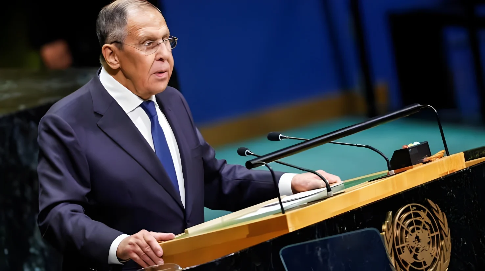

Le samedi 26 septembre 2026, en marge de l'Assemblée générale des Nations unies à New York, le ministre allemand des Affaires étrangères Johann Wadephul s'est entretenu avec son homologue russe Sergueï Lavrov. C'est la première rencontre de ce niveau entre les deux pays depuis le début de l'invasion à grande échelle de l'Ukraine en février 2022. L'échange, d'une vingtaine de minutes et demandé par Berlin, a surtout révélé l'ampleur des désaccords.
C'est l'Allemagne qui a sollicité l'entretien, selon le ministère russe des Affaires étrangères. Depuis la visite d'Annalena Baerbock à Moscou en janvier 2022, quelques semaines avant l'invasion, aucun chef de la diplomatie allemande n'avait rencontré officiellement Sergueï Lavrov. Signe de la sensibilité du sujet, Johann Wadephul n'a informé ses alliés européens de la rencontre qu'après coup, dans un message consulté par l'agence Reuters.
Johann Wadephul a d'abord mis en avant l'urgence humanitaire : permettre les exportations de céréales russes et ukrainiennes pour éviter la faim dans les pays du Sud global. Il a appelé à un cessez-le-feu immédiat et complet, en priorité sur les exportations de céréales et les infrastructures énergétiques, et invité Moscou à dialoguer avec Kiev.
Il a aussi fait part de son inquiétude face à l'escalade des attaques hybrides russes en Europe. Quelques jours plus tôt, il accusait Vladimir Poutine d'intensifier son agression contre le continent, estimant que ces attaques contre les soutiens de l'Ukraine avaient « atteint un nouveau niveau ».
Côté russe, le ton est resté distant. Lors d'une conférence de presse, Sergueï Lavrov a assuré n'avoir rien appris de nouveau : son homologue n'aurait fait que répéter la position publique de Berlin. Johann Wadephul a lui-même reconnu que l'échange avait surtout montré de profondes divisions sur la guerre en Ukraine.
La rencontre intervient au moment où les relations germano-russes sont au plus bas. Dans la nuit du 4 au 5 août 2026, un drone piégé a été découvert sur le tarmac de l'aéroport de Leipzig/Halle, plaque tournante du soutien logistique à l'Ukraine. Le 1er septembre, Berlin a officiellement attribué l'attaque à la Russie et annoncé la fermeture d'un consulat russe. Sergueï Lavrov avait alors dénoncé le « début d'une vraie guerre ».
Annalena Baerbock, alors ministre des Affaires étrangères, se rend à Moscou et rencontre Sergueï Lavrov.
La Russie lance l'invasion à grande échelle de l'Ukraine ; les contacts de haut niveau entre Berlin et Moscou se figent.
Un drone piégé est découvert à l'aéroport de Leipzig/Halle.
Berlin attribue l'attaque à la Russie et ferme un consulat russe.
Johann Wadephul et Sergueï Lavrov se rencontrent à New York.
« Le temps presse : compte tenu des pénuries alimentaires dans de nombreux pays, en particulier dans le Sud global, toutes les parties doivent être prêtes à s'engager de manière constructive. »
— Johann Wadephul à Sergueï Lavrov, New York, 26 septembre 2026En rencontrant Sergueï Lavrov, Berlin ne rompt pas avec sa ligne de soutien à l'Ukraine : l'Allemagne reste, après les États-Unis, l'un de ses principaux soutiens militaires et financiers. Mais ce geste montre qu'aucune diplomatie ne peut durablement se passer d'un canal avec Moscou, surtout lorsque se dessinent des trêves partielles sur les céréales ou l'énergie et que Washington mène ses propres discussions avec le Kremlin. Pour l'Allemagne, fragilisée sur la scène multilatérale après son échec au Conseil de sécurité de l'ONU en juin, l'enjeu est de ne pas laisser les États-Unis seuls négocier l'avenir de la sécurité européenne. Le risque est inverse : paraître divisée ou naïve face à un pouvoir russe qui multiplie les attaques hybrides sur son sol. D'où la prudence de Berlin, qui n'a prévenu ses partenaires qu'une fois la rencontre terminée.